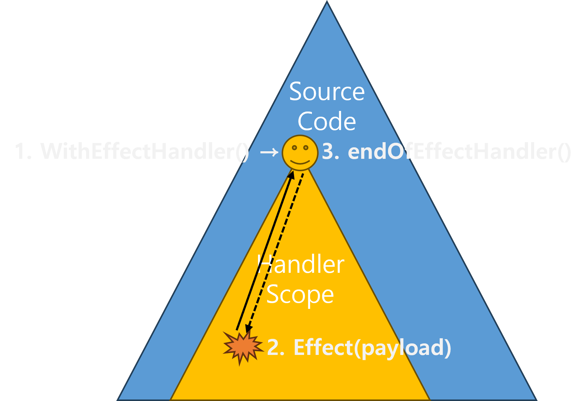

<!DOCTYPE html>
<html lang="en">
  <head>
    <meta charset="utf-8" />
    <meta name="viewport" content="width=device-width, initial-scale=1.0, maximum-scale=1.0, user-scalable=no" />

    <title></title>
    <link rel="stylesheet" href="dist/reveal.css" />
    <link rel="stylesheet" href="dist/theme/moon.css" id="theme" />
    <link rel="stylesheet" href="plugin/highlight/zenburn.css" />
	<link rel="stylesheet" href="css/layout.css" />
	<link rel="stylesheet" href="plugin/customcontrols/style.css">


    <script defer src="dist/fontawesome/all.min.js"></script>

	<script type="text/javascript">
		var forgetPop = true;
		function onPopState(event) {
			if(forgetPop){
				forgetPop = false;
			} else {
				parent.postMessage(event.target.location.href, "app://obsidian.md");
			}
        }
		window.onpopstate = onPopState;
		window.onmessage = event => {
			if(event.data == "reload"){
				window.document.location.reload();
			}
			forgetPop = true;
		}

		function fitElements(){
			const itemsToFit = document.getElementsByClassName('fitText');
			for (const item in itemsToFit) {
				if (Object.hasOwnProperty.call(itemsToFit, item)) {
					var element = itemsToFit[item];
					fitElement(element,1, 1000);
					element.classList.remove('fitText');
				}
			}
		}

		function fitElement(element, start, end){

			let size = (end + start) / 2;
			element.style.fontSize = `${size}px`;

			if(Math.abs(start - end) < 1){
				while(element.scrollHeight > element.offsetHeight){
					size--;
					element.style.fontSize = `${size}px`;
				}
				return;
			}

			if(element.scrollHeight > element.offsetHeight){
				fitElement(element, start, size);
			} else {
				fitElement(element, size, end);
			}		
		}


		document.onreadystatechange = () => {
			fitElements();
			if (document.readyState === 'complete') {
				if (window.location.href.indexOf("?export") != -1){
					parent.postMessage(event.target.location.href, "app://obsidian.md");
				}
				if (window.location.href.indexOf("print-pdf") != -1){
					let stateCheck = setInterval(() => {
						clearInterval(stateCheck);
						window.print();
					}, 250);
				}
			}
	};


        </script>
  </head>
  <body>
    <div class="reveal">
      <div class="slides"><section  data-markdown><script type="text/template"><!-- .slide: class="drop" -->
<div class="" style="position: absolute; left: 0px; top: 0px; height: 720px; width: 1280px; min-height: 720px; display: flex; flex-direction: column; align-items: center; justify-content: center" absolute="true">

# Effect-ive Go

### Focus on effects. Be yourself, respect your runtime.
<br>


Joohyung Park, OnTheGround

May 22, 2025
</div></script></section><section  data-markdown><script type="text/template"><!-- .slide: class="drop" -->
<div class="" style="position: absolute; left: 0px; top: 0px; height: 720px; width: 1280px; min-height: 720px; display: flex; flex-direction: column; align-items: center; justify-content: center" absolute="true">

## Worst Kind of Tests?

- Tests tightly coupled with implementation    
	- Reproduce corner cases and subtle timing issues tied to the current implementation<!-- .element: style="font-size: 80%" -->
	- Refactoring invalidates tests → Regression<!-- .element: style="font-size: 80%" -->
	- Code becomes rigid, resistant to change<!-- .element: style="font-size: 80%" -->
	- Maintaining tests becomes harder than maintaining code<!-- .element: style="font-size: 80%; margin-bottom: 1em" -->
- How did we end up testing the implementation instead of the interface?
</div></script></section><section  data-markdown><script type="text/template"><!-- .slide: class="drop" -->
<div class="" style="position: absolute; left: 0px; top: 0px; height: 720px; width: 1280px; min-height: 720px; display: flex; flex-direction: column; align-items: center; justify-content: center" absolute="true">

## Goroutines + Channels / Shared Memory

- Complex entanglement of concurrency, synchronization, and ownership within the implementation      
	- Multiple goroutines with race conditions or timing issues around mutual exclusion and channels<!-- .element: style="font-size: 80%" -->
	- Using mocks, spies, or exposing internal state -> debugging?<!-- .element: style="font-size: 80%; margin-bottom: 1em" -->
- CSP is hard to test   
	- Preemptive goroutines<!-- .element: style="font-size: 80%" -->
	- Implicit synchronization through shared channels<!-- .element: style="font-size: 80%" -->
	- Non-deterministic select behavior<!-- .element: style="font-size: 80%; margin-bottom: 1em" -->
- Is there a better alternative?
</div></script></section><section  data-markdown><script type="text/template"><!-- .slide: class="drop" -->
<div class="" style="position: absolute; left: 0px; top: 0px; height: 720px; width: 1280px; min-height: 720px; display: flex; flex-direction: column; align-items: center; justify-content: center" absolute="true">

## Separation of Concerns
- Divide & Conquer: M * N * L -> M + N + L <!-- .element: style="margin-bottom: 1em" -->
- Pure functions: Tableizable     
	- Core data transformation logic<!-- .element: style="font-size: 80%" -->
	- Easy to test, can be skipped if obvious<!-- .element: style="font-size: 80%; margin-bottom: 1em" -->
- Side effects: Non-tableizable 
	- The devil lies in the effects: concurrency, synchronization, ownership, stream, state<!-- .element: style="font-size: 80%" -->
	- Mixing pure logic with various side effects leads to the testing hell mentioned earlier <!-- .element: style="font-size: 80%; margin-bottom: 1em" -->
- Is there a way to keep unavoidable side effects separated from pure logic?    
	- → **Effect Pattern**
</div></script></section><section  data-markdown><script type="text/template"><!-- .slide: class="drop" data-background-color="#000" -->
<div class="" style="position: absolute; left: 0px; top: 0px; height: 720px; width: 1280px; min-height: 720px; display: flex; flex-direction: column; align-items: center; justify-content: center" absolute="true">

<div style="position: relative; width: 100%; height: 100%;">
  <video
    controls
    preload="auto"
    style="width: 100%; height: 100%; object-fit: contain; background-color: black;"
  >
    <source src="assets/Dontboreustakeittothechorus.mp4" type="video/mp4">
    Your browser does not support the video tag.
  </video>
</div>
</div></script></section><section  data-markdown><script type="text/template"><!-- .slide: class="drop" -->
<div class="" style="position: absolute; left: 0px; top: 0px; height: 720px; width: 1280px; min-height: 720px; display: flex; flex-direction: column; align-items: center; justify-content: center" absolute="true">

## Cached Database

<style>
  .reveal pre code {
    text-align: left;
	max-height: none;
	white-space: pre-wrap !important;
	word-break: break-word;
	overflow-wrap: anywhere;
	margin: 0 auto;      
  }
</style>

``` go
// http://github.com/on-the-ground/effect_ive_go/blob/main/examples/cached_database/main.go
...
	ctx, endOfDBHandler := state.WithEffectHandler[string, Person](
		false, // delegation == false
		state.NewCasStore(memDB),
		...
	)
	defer endOfDBHandler()
...
	ctx, endOfCacheHandler := state.WithEffectHandler[string, Person](
		true, // delegation == true
		state.NewSetStore(rist),
		...
	)
	defer endOfCacheHandler()
...
	ok, err := state.EffectInsertIfAbsent(ctx, key, person)
	log.Effect(ctx, log.LogInfo, "insert attempt", map[string]interface{}{
		"key":     key,
		"value":   person,
		"success": ok,
		"error":   err,
	})
```
</div></script></section><section  data-markdown><script type="text/template"><!-- .slide: class="drop" -->
<div class="" style="position: absolute; left: 0px; top: 0px; height: 720px; width: 1280px; min-height: 720px; display: flex; flex-direction: column; align-items: center; justify-content: center" absolute="true">

## [Singed's Poison Trail](https://github.com/on-the-ground/effect_ive_go/tree/main/examples/singed_poison_trail)
</div></script></section><section  data-markdown><script type="text/template"><!-- .slide: class="drop" -->
<div class="" style="position: absolute; left: 0px; top: 0px; height: 720px; width: 1280px; min-height: 720px; display: flex; flex-direction: column; align-items: center; justify-content: center" absolute="true">

## Effect-ive Go != MagicBox

<split left="2" right="3" gap="0">

  - Effect-ive Go proposes the minimal idiomatic interface for delegating effects, staying true to Go
	  - Uses `context` and `teardown` for idiomatic effect handler binding/unbinding<!-- .element: style="font-size: 80%" -->
	  - Effects declared with type and payload<!-- .element: style="font-size: 80%" -->
	  - Effect payloads are sent over channels to matching handlers found in context<!-- .element: style="font-size: 80%; margin-bottom: 1em" -->
	


</split>
</div></script></section><section  data-markdown><script type="text/template"><!-- .slide: class="drop" -->
<div class="" style="position: absolute; left: 0px; top: 0px; height: 720px; width: 1280px; min-height: 720px; display: flex; flex-direction: column; align-items: center; justify-content: center" absolute="true">

## Why Use Context to Find Handlers?
- Explicit ≠ Clear: Does the function signature reveal the core logic?


```go
// Typical function
func ValidateUser(ctx context.Context, db *sql.DB, logger *Logger, metrics *Metrics, config *AppConfig, tracer *Tracer, requestID string, featureFlags map[string]bool, ...) (bool, error)
```

```go
// With injected handlers
func ValidateUser(ctx context.Context, stateHdl StateHandler, logHdl LogHandler, statHdl StatisticsHandler, configHdl ConfigHandler, obsrcHdl ObservationHandler,  ...) (bool, error)
```

```go
// With scoped handlers
// Only core logic dependencies are exposed; auxiliary effects are delegated via context
func ValidateUser(ctx context.Context, whiteList, blackList []User, user User) bool
```

```go
// Context abusing
// All core logic dependencies must be explicitly shown in the function signature
func ValidateUser(ctx context.Context, user User) bool
```
</div></script></section><section  data-markdown><script type="text/template"><!-- .slide: class="drop" -->
<div class="" style="position: absolute; left: 0px; top: 0px; height: 720px; width: 1280px; min-height: 720px; display: flex; flex-direction: column; align-items: center; justify-content: center" absolute="true">

# Effects on Effect-ive Go
</div></script></section><section  data-markdown><script type="text/template"><!-- .slide: class="drop" -->
<div class="" style="position: absolute; left: 0px; top: 0px; height: 720px; width: 1280px; min-height: 720px; display: flex; flex-direction: column; align-items: center; justify-content: center" absolute="true">

## [Basis](https://pkg.go.dev/github.com/on-the-ground/effect_ive_go/effects)


- Effect categories : Resumable / FireAndForget / ~Abortive(not suitable for Go)~

- Declaring an Effect:
	- Lookup handler by effect enum via context<!-- .element: style="font-size: 80%" -->
		- Context is only for handler discovery
	- Pass payload via handler channel<!-- .element: style="font-size: 80%" -->
	- Wait for result (Resumable), or send without waiting (FireAndForget)<!-- .element: style="font-size: 80%; margin-bottom: 1em" -->
- Handler behavior:
	- Resumable: returns result via resume channel<!-- .element: style="font-size: 80%" -->
	- Partitionable handlers process in parallel based on partitions<!-- .element: style="font-size: 80%" -->
</div></script></section><section  data-markdown><script type="text/template"><!-- .slide: class="drop" -->
<div class="" style="position: absolute; left: 0px; top: 0px; height: 720px; width: 1280px; min-height: 720px; display: flex; flex-direction: column; align-items: center; justify-content: center" absolute="true">

## [State](https://pkg.go.dev/github.com/on-the-ground/effect_ive_go/effects/state)
- Lock free effects
	- Insert, Load, CompareAndSwap, CompareAndDelete effects<!-- .element: style="font-size: 80%; margin-bottom: 1em" -->

- EventSourcingEffect
	- Subscribe to state command operations via prefix<!-- .element: style="font-size: 80%" -->

- TTL support
- Multi-tier state using delegation
</div></script></section><section  data-markdown><script type="text/template"><!-- .slide: class="drop" -->
<div class="" style="position: absolute; left: 0px; top: 0px; height: 720px; width: 1280px; min-height: 720px; display: flex; flex-direction: column; align-items: center; justify-content: center" absolute="true">

## [Stream](https://pkg.go.dev/github.com/on-the-ground/effect_ive_go/effects/stream)

- Stream operators stay alive until source is closed or context is canceled
	- EagerFilter, LazyFilter, Map, Merge, OrderBy, Pipe(bypass)<!-- .element: style="font-size: 80%; margin-bottom: 1em" -->

- Arbiter provided to safely consume from source
	- Subscribe, Unsubscribe<!-- .element: style="font-size: 80%" -->
</div></script></section><section  data-markdown><script type="text/template"><!-- .slide: class="drop" -->
<div class="" style="position: absolute; left: 0px; top: 0px; height: 720px; width: 1280px; min-height: 720px; display: flex; flex-direction: column; align-items: center; justify-content: center" absolute="true">

## [Lease](https://pkg.go.dev/github.com/on-the-ground/effect_ive_go/effects/lease)

- Combines Stream and State handlers
- External Semaphore
	- ResourceRegistration, Deregistration, Acquire, Release effects<!-- .element: style="font-size: 80%; margin-bottom: 1em" -->

- TTL  support

```go
	// With numOwners == 1, this acts as a lock and expires after TTL
	ok, err := lease.ResourceRegistrationEffect(ctx, key, 1, ttl, pollInterval)

	ok, err = lease.AcquisitionEffect(ctx, key)

	/* Mutex zone */

	ok, err = lease.ReleaseEffect(ctx, key)

	ok, err = lease.ResourceDeregistrationEffect(ctx, key)
```
</div></script></section><section  data-markdown><script type="text/template"><!-- .slide: class="drop" -->
<div class="" style="position: absolute; left: 0px; top: 0px; height: 720px; width: 1280px; min-height: 720px; display: flex; flex-direction: column; align-items: center; justify-content: center" absolute="true">

## [Concurrency](https://pkg.go.dev/github.com/on-the-ground/effect_ive_go/effects/concurrency)

- Provides a supervisor for managing goroutines within a scope
	- Parent and children **never** share context<!-- .element: style="font-size: 80%" -->

	- Cancellation from parent is propagated by supervisor<!-- .element: style="font-size: 80%" -->

	- All child goroutines are ensured to terminate when scope ends<!-- .element: style="font-size: 80%; margin-bottom: 1em" -->

- `AwaitAll` allows waiting for multiple tasks simultaneously
</div></script></section><section  data-markdown><script type="text/template"><!-- .slide: class="drop" -->
<div class="" style="position: absolute; left: 0px; top: 0px; height: 720px; width: 1280px; min-height: 720px; display: flex; flex-direction: column; align-items: center; justify-content: center" absolute="true">

## [Task](https://pkg.go.dev/github.com/on-the-ground/effect_ive_go/effects/task)

- Go does not distinguish between sync and async functions
	- CSP enables seamless concurrency<!-- .element: style="font-size: 80%" -->

	- But without distinction, hangs may happen unpredictably<!-- .element: style="font-size: 80%; margin-bottom: 1em" -->

- Task effect separates async invocation from result retrieval
</div></script></section><section  data-markdown><script type="text/template"><!-- .slide: class="drop" -->
<div class="" style="position: absolute; left: 0px; top: 0px; height: 720px; width: 1280px; min-height: 720px; display: flex; flex-direction: column; align-items: center; justify-content: center" absolute="true">

## [Binding](https://pkg.go.dev/github.com/on-the-ground/effect_ive_go/effects/binding)
- State: for managing dynamic key-value data
- Binding: for static, read-only key-value data
- Used for config, environment lookup
</div></script></section><section  data-markdown><script type="text/template"><!-- .slide: class="drop" -->
<div class="" style="position: absolute; left: 0px; top: 0px; height: 720px; width: 1280px; min-height: 720px; display: flex; flex-direction: column; align-items: center; justify-content: center" absolute="true">

## Time?

- Time requires precision → not delegable<!-- .element: style="margin-bottom: 1em" -->
- Is nanosecond-level precision from the runtime meaningful?<!-- .element: style="margin-bottom: 1em" -->
- Timespan:
	- Treat time not as a point but a range <!-- .element: style="font-size: 80%" -->
	- Let the system ensure operations occur within the range<!-- .element: style="font-size: 80%" -->
	- Allows for trust in the span(SoC)<!-- .element: style="font-size: 80%" -->
</div></script></section><section  data-markdown><script type="text/template"><!-- .slide: class="drop" -->
<div class="" style="position: absolute; left: 0px; top: 0px; height: 720px; width: 1280px; min-height: 720px; display: flex; flex-direction: column; align-items: center; justify-content: center" absolute="true">

## Error?

- A brief history of error handling:
	- Output as error: `return -1`<!-- .element: style="font-size: 80%" -->
	- Clean output with exception: `throw exp`<!-- .element: style="font-size: 80%" -->
	- Error as output: `return output, error`<!-- .element: style="font-size: 80%; margin-bottom: 1em" -->
- In Go, errors are outputs
	- - - Attaching contextual messages to errors is part of domain logic<!-- .element: style="font-size: 80%" -->
</div></script></section><section  data-markdown><script type="text/template"><!-- .slide: class="drop" -->
<div class="" style="position: absolute; left: 0px; top: 0px; height: 720px; width: 1280px; min-height: 720px; display: flex; flex-direction: column; align-items: center; justify-content: center" absolute="true">

## Once you've extracted all effects, is what remains truly pure?
</div></script></section><section  data-markdown><script type="text/template"><!-- .slide: class="function-as-a-table drop" -->
<div class="" style="position: absolute; left: 0px; top: 0px; height: 720px; width: 1280px; min-height: 720px; display: flex; flex-direction: column; align-items: center; justify-content: center" absolute="true">

## Function as Table

<style>
.function-as-a-table pre code {
  width: 60%;         
}
</style>
- Functions in practical languages can be impure at any time  
	- It's essential to separately identify truly pure parts <!-- .element: style="font-size: 80%; margin-bottom: 1em" -->
- A pure function is a lazy table  
	- Same input → always the same output <!-- .element: style="font-size: 80%" -->
	- ~Local reasoning, referential transparency, substitution?~ <!-- .element: style="font-size: 80%" -->
	- => Tableizable, convertible to a table<!-- .element: style="font-size: 80%" -->

```go
fib = purefn.TableizeI1O1(func(n int) int {
	if n <= 1 {
		return n
	}
	return fib(n-1) + fib(n-2)
}, 32)
```
</div></script></section><section  data-markdown><script type="text/template"><!-- .slide: class="tableize-impl drop" -->
<div class="" style="position: absolute; left: 0px; top: 0px; height: 720px; width: 1280px; min-height: 720px; display: flex; flex-direction: column; align-items: center; justify-content: center" absolute="true">

## Tableize Implementation


<style>
.tableize-impl pre code {
  width: 60%;       
  margin: 0 auto;   

}
</style>
```go
func tableize[O any](
	pureFn func(...ComparableOrStringer) O,
	maxTableSize uint32,
) func(...ComparableOrStringer) O {
	memo := NewTrie[O](maxTableSize)
	return func(args ...ComparableOrStringer) O {
		keys := make([]ComparableOrString, len(args))
		for i, arg := range args {
			keys[i] = tableKey(arg)
		}
		v, ok := memo.Load(keys)
		if !ok {
			v = pureFn(args...)
			memo.Store(keys, v)
		}
		return v
	}
}
```
</div></script></section><section  data-markdown><script type="text/template"><!-- .slide: class="drop" -->
<div class="" style="position: absolute; left: 0px; top: 0px; height: 720px; width: 1280px; min-height: 720px; display: flex; flex-direction: column; align-items: center; justify-content: center" absolute="true">

## Benchmark

```
cpu: Intel(R) Core(TM) i7-14700

BenchmarkNaiveFib20-28                           55534       19869 ns/op       0 B/op      0 allocs/op

BenchmarkTableizedFib20-28                    24441051       71.02 ns/op      32 B/op      2 allocs/op

BenchmarkNaiveLevenshtein-28                    315432        3809 ns/op       0 B/op      0 allocs/op

BenchmarkTableizedLevenshtein/TrieSize_2-28    7247058       201.3 ns/op      96 B/op      4 allocs/op

BenchmarkTableizedLevenshtein/TrieSize_8-28    5805490       204.2 ns/op      96 B/op      4 allocs/op

BenchmarkTableizedLevenshtein/TrieSize_32-28   7311618       196.4 ns/op      96 B/op      4 allocs/op

BenchmarkNaiveDist-28                       1000000000      0.1012 ns/op       0 B/op      0 allocs/op

BenchmarkTableizedDist-28                      6820208       203.3 ns/op      96 B/op      4 allocs/op

PASS

coverage: 57.3% of statements
```
</div></script></section><section  data-markdown><script type="text/template"><!-- .slide: class="tableize-debug drop" -->
<div class="" style="position: absolute; left: 0px; top: 0px; height: 720px; width: 1280px; min-height: 720px; display: flex; flex-direction: column; align-items: center; justify-content: center" absolute="true">

## TableizeDebug
- What if you tableized something assuming it was pure, but the output turns out to be unstable? <!-- .element: style="margin-bottom: 1em" -->
- Use this for validation in CI, testbeds, or canary environments before production deployment


<style>
.tableize-debug pre code {
  width: 60%;       
}
</style>
```go
func tableizeDebug[O ComparableEquatable](
	pureFn func(...ComparableOrStringer) O,
	maxTableSize uint32,
) func(...ComparableOrStringer) O {
	memo := NewTrie[O](maxTableSize)
	return func(args ...ComparableOrStringer) O {
		...
		actual = pureFn(args...)
		loaded, ok := memo.Load(keys)
		if ok {
			if !Equals(actual, loaded) {
				panic("Do not tableize impure functions")
			}
		} else {
			memo.Store(keys, v)
		}
		return v
	}
}
```
</div></script></section><section  data-markdown><script type="text/template"><!-- .slide: class="drop" -->
<div class="" style="position: absolute; left: 0px; top: 0px; height: 720px; width: 1280px; min-height: 720px; display: flex; flex-direction: column; align-items: center; justify-content: center" absolute="true">

## Novelty of Effect-ive Programming

- Focus on effects  
	- Emphasize effects as a goal, not just a means <!-- .element: style="font-size: 80%; margin-bottom: 1em" -->
- Be yourself, respect your runtime  
	- Handle effects in a way that respects each language’s unique philosophy and idioms <!-- .element: style="font-size: 80%" -->
</div></script></section><section  data-markdown><script type="text/template"><!-- .slide: class="drop" -->
<div class="" style="position: absolute; left: 0px; top: 0px; height: 720px; width: 1280px; min-height: 720px; display: flex; flex-direction: column; align-items: center; justify-content: center" absolute="true">

Isolation and identification of effects and pure functions is complete.<br>
Does it feel like Go? Or does it feel like functional programming?<br>
<br>
This is **Effect-ive Go**.<br>
<br>
I haven’t created anything new.<br>
I’ve merely distilled the spirit of Go.
</div></script></section><section  data-markdown><script type="text/template"><!-- .slide: class="drop" -->
<div class="" style="position: absolute; left: 0px; top: 0px; height: 720px; width: 1280px; min-height: 720px; display: flex; flex-direction: column; align-items: center; justify-content: center" absolute="true">

## PS: Haskell vs Effect-ive Programming

- Haskell abstracts through mathematics  
	- A function is a pure mapping with one input and one output: output = f(input) <!-- .element: style="font-size: 80%" -->
	- Programs are primarily composed through pure function composition<!-- .element: style="font-size: 80%; margin-bottom: 1em" -->
- Effects are essential in programs, but Haskell avoids executing them inside functions  
	- Thus, effects are only allowed in specific impure zones like `runX`, `main`, etc. <!-- .element: style="font-size: 80%; margin-bottom: 1em" -->
- Effects must be deferred lazily → monads  
	- Encapsulate effects inside containers like `Either[T]` <!-- .element: style="font-size: 80%" -->
	- How do you connect a pure input with an effectful output? <!-- .element: style="font-size: 80%" -->
		- `f1: func(T1) Either[T2], f2: func(T2) Either[T3]` <!-- .element: style="font-size: 80%" -->
	- Monad: an interface to connect containerized outputs with clean inputs <!-- .element: style="font-size: 80%; margin-bottom: 1em" -->
- But problems arise when effects become deeply nested  
	- `Task[Either[T]] != Either[Task[T]]` <!-- .element: style="font-size: 80%" -->
	- `StateReaderTaskEither[T]` <!-- .element: style="font-size: 80%" -->
</div></script></section><section  data-markdown><script type="text/template"><!-- .slide: class="drop" -->
<div class="" style="position: absolute; left: 0px; top: 0px; height: 720px; width: 1280px; min-height: 720px; display: flex; flex-direction: column; align-items: center; justify-content: center" absolute="true">

## PS: Haskell vs Effect-ive Programming

- Let’s approach programming more like humans do
	- People struggle with reasoning about deeply deferred and nested operations <!-- .element: style="font-size: 80%" -->
	- Resolve effects eagerly instead <!-- .element: style="font-size: 80%" -->
	- But I don’t want to perform them myself, so let’s delegate them now to someone else <!-- .element: style="font-size: 80%; margin-bottom: 1em" -->
- Effects are not core logic, so they can be patterned and handled mechanically  
	- Assign handlers for each effect pattern and communicate with them <!-- .element: style="font-size: 80%" -->
	- Where are those handlers? → Not DI, but IoC <!-- .element: style="font-size: 80%; margin-bottom: 1em" -->
- We need a way to context-switch into a handler, perform the effect, and return  
	- Low-level abstraction: Continuation Passing Style <!-- .element: style="font-size: 80%" -->
	- High-level abstraction: Communicating Sequential Processes <!-- .element: style="font-size: 80%" -->
</div></script></section></div>
    </div>

    <script src="dist/reveal.js"></script>

    <script src="plugin/markdown/markdown.js"></script>
    <script src="plugin/highlight/highlight.js"></script>
    <script src="plugin/zoom/zoom.js"></script>
    <script src="plugin/notes/notes.js"></script>
    <script src="plugin/math/math.js"></script>
	<script src="plugin/mermaid/mermaid.js"></script>
	<script src="plugin/chart/chart.min.js"></script>
	<script src="plugin/chart/plugin.js"></script>
	<script src="plugin/customcontrols/plugin.js"></script>

    <script>
      function extend() {
        var target = {};
        for (var i = 0; i < arguments.length; i++) {
          var source = arguments[i];
          for (var key in source) {
            if (source.hasOwnProperty(key)) {
              target[key] = source[key];
            }
          }
        }
        return target;
      }

	  function isLight(color) {
		let hex = color.replace('#', '');

		// convert #fff => #ffffff
		if(hex.length == 3){
			hex = `${hex[0]}${hex[0]}${hex[1]}${hex[1]}${hex[2]}${hex[2]}`;
		}

		const c_r = parseInt(hex.substr(0, 2), 16);
		const c_g = parseInt(hex.substr(2, 2), 16);
		const c_b = parseInt(hex.substr(4, 2), 16);
		const brightness = ((c_r * 299) + (c_g * 587) + (c_b * 114)) / 1000;
		return brightness > 155;
	}

	var bgColor = getComputedStyle(document.documentElement).getPropertyValue('--r-background-color').trim();
	var isLight = isLight(bgColor);

	if(isLight){
		document.body.classList.add('has-light-background');
	} else {
		document.body.classList.add('has-dark-background');
	}

      // default options to init reveal.js
      var defaultOptions = {
        controls: true,
        progress: true,
        history: true,
        center: true,
        transition: 'default', // none/fade/slide/convex/concave/zoom
        plugins: [
          RevealMarkdown,
          RevealHighlight,
          RevealZoom,
          RevealNotes,
          RevealMath.MathJax3,
		  RevealMermaid,
		  RevealChart,
		  RevealCustomControls,
        ],


    	allottedTime: 120 * 1000,

		mathjax3: {
			mathjax: 'plugin/math/mathjax/tex-mml-chtml.js',
		},
		markdown: {
		  gfm: true,
		  mangle: true,
		  pedantic: false,
		  smartLists: false,
		  smartypants: false,
		},

		mermaid: {
			theme: isLight ? 'default' : 'dark',
		},

		customcontrols: {
			controls: [
			]
		},
      };

      // options from URL query string
      var queryOptions = Reveal().getQueryHash() || {};

      var options = extend(defaultOptions, {"width":1280,"height":720,"margin":0.1,"controls":true,"progress":true,"slideNumber":false,"transition":"slide","transitionSpeed":"default"}, queryOptions);
    </script>

    <script>
      Reveal.initialize(options);
    </script>
  </body>

  <!-- created with Advanced Slides -->
</html>
